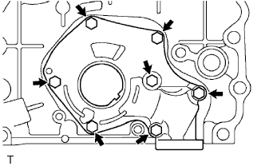

МАСЛЯНЫЙ НАСОС > РАЗБОРКА |
| 1. СНИМИТЕ ПЕРЕПУСКНОЙ КЛАПАН МАСЛЯНОГО НАСОСА |
 |
Выверните пробку перепускного клапана с помощью торцевого ключа на 27 мм и снимите прокладку.
Снимите пружину клапана и перепускной клапан масляного насоса.
| 2. СНИМИТЕ КРЫШКУ МАСЛЯНОГО НАСОСА |
|  |
Выверните 7 болтов и снимите крышку масляного насоса.
| 3. СНИМИТЕ КОМПЛЕКТ ШЕСТЕРЕН МАСЛЯНОГО НАСОСА |
Снимите шестерни масляного насоса с крышки цепного привода газораспределительного механизма.